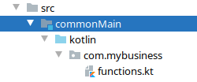
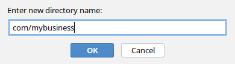
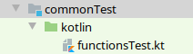
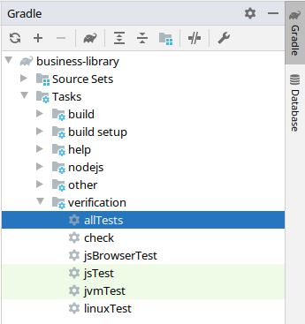

One of the core benefits of Kotlin/Multiplatform is the ability to test once and gain confidence in your code on all platforms at once.
To demonstrate that, let’s design our first unit test.
Writing it
To start, we’ll write some code that is common to all platforms.
First, in commonMain/kotlin, let’s create a package and a kotlin source file:

|
At the moment, if you want to create a package, you need to manually create the directory structure.  |
Let’s write our first multi-platform function:
package com.mybusiness
fun addition(left: Int, right: Int): Int {
return left + right
}Now that we have our first function, we can test it. Let’s create the appropriate test file:

import com.mybusiness.*
import kotlin.test.*
class AdditionTests {
@Test
fun testSimpleAddition() {
assertEquals(5, addition(2, 3))
}
@Test
fun testNegativeAddition() {
assertEquals(-1, addition(2, -3))
}
}As you can see, testing works much like JUnit. Nothing new under the sun!
Now, all that remain is to run our tests.
Running it
In the Gradle pane, open Tasks > verification and double click ont allTests to run the allTests Gradle task.

Look at the command line result, you should find that gradle has run some tasks, more importantly you should see the following ones: jsTest, jvmTest & linuxTest (or macosTest, or mingwTest).
This means that the tests were compiled by the three different compilers and run on three different targets.
In fact, let’s see all testing in action. Add this at the end of your Gradle build file:
afterEvaluate {
tasks.withType<AbstractTestTask>().forEach {
it.testLogging {
events("passed", "skipped", "failed")
}
}
}Rerun the allTests task and… nothing happens.
Everything is "up to date": because the code has not change, Gradle does not rerun the tests.
You first need to run the clean task (in the build group), then rerun the allTests task.
Lo and behold:
... > Task :jsBrowserTest AdditionTests.testSimpleAddition PASSED AdditionTests.testNegativeAddition PASSED ... > Task :jvmTest AdditionTests > testSimpleAddition PASSED AdditionTests > testNegativeAddition PASSED ... > Task :linuxTest AdditionTests.testSimpleAddition PASSED AdditionTests.testNegativeAddition PASSED
| You may have noticed that even if you defined an iOS target there is nothing showed here. This is because Kotlin/Multiplatform plugin does not support running tests on other platform than the host platforms. We will see how to go around this in a following chapter. |
Now try to change one of the two tests to fail, and see what happens when you run them. Unsurprisingly, all three test task fail.
| Gradle generated an HTML report with a link at the end. Open it in a browser to see what went wrong ;) |
As you can see, when running the allTests task runs, well, all tests.
The Kotlin/JVM is the fastest and most reliable compiler so, most of the time, running the jvmTest task will be faster and give results easier to understand.
Only once all tests have been proven correct in the JVM, you should start running allTests to proof your code on each other targeted platforms.
|